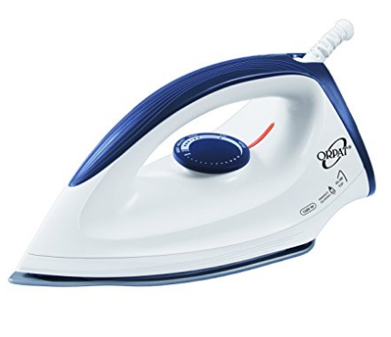

Back
Buyit
Contact Us
Back
Buyit
Contact Us
Home Appliances
Orpat OEI 187 1200-Watt Dry Iron (White and Blue)

M.R.P.: 680.00
Price: 549.00
Deal Price: 349.00 FREE Delivery.
You Save: 331.00 (49%)
Inclusive of all taxes
Cash on Delivery eligible.
PRODUCT DESCRIPTION
- In case of any Product Defect- Contact the Brand Customer Care at : +91 - 02822 - 230491
- Ergonomic design and Light weight with instant heating
- German grade non-stick coated sole plate
- Cast In Sole Plate Technology For Faster And Uniform Heating
- Thermostat For Variable Temperature Control
- Thermal Fuse For Over Heat Safety Protection
- Power Indicator